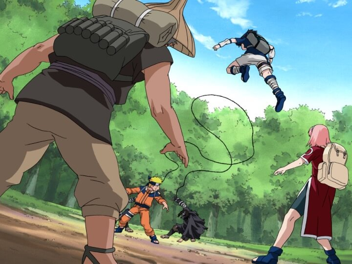

Forest of the death mission

FOREST OF THE DEATH MISSION
The Forest of Death is the second stage of the Chunin Exams, where ninja teams must survive in a dangerous forest while collecting both the Heaven and Earth Scrolls. During this mission, Team 7 faces deadly enemies, including Orochimaru, who places the Cursed Seal on Sasuke. The mission tests their teamwork, courage, and determination, making it one of the most exciting moments in the Naruto series.
This mission also marks an important turning point for Team 7. Naruto becomes more determined to protect his friends, Sakura shows her strength and loyalty under pressure, and Sasuke begins to struggle with the power of the Cursed Seal. Their experiences in the Forest of Death help them grow stronger and prepare them for the challenges that lie ahead.